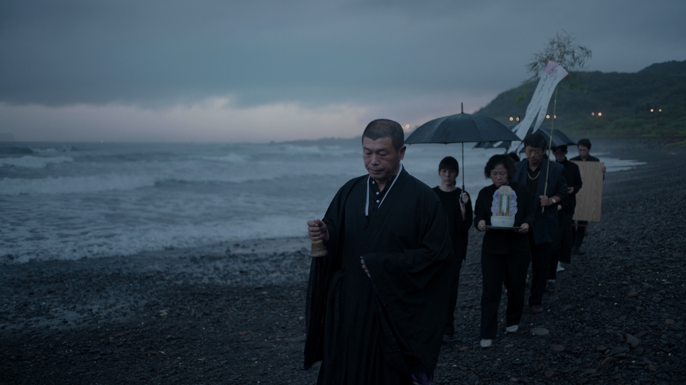
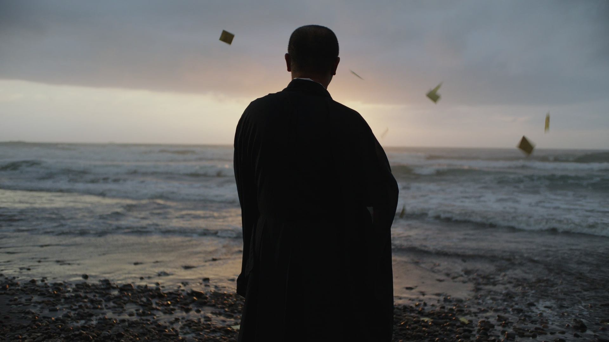
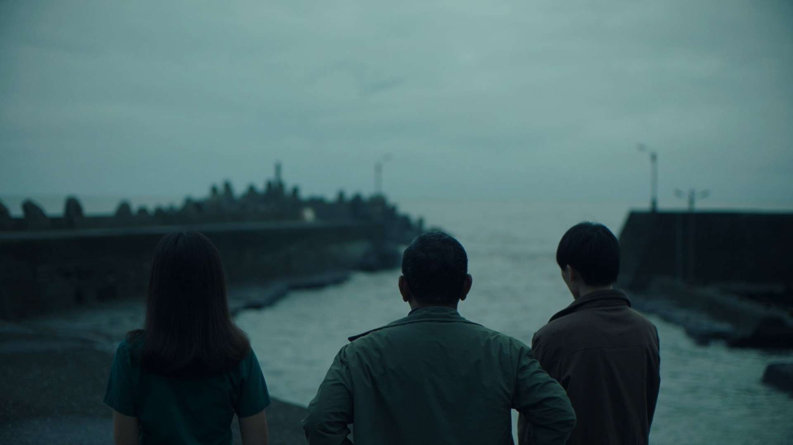
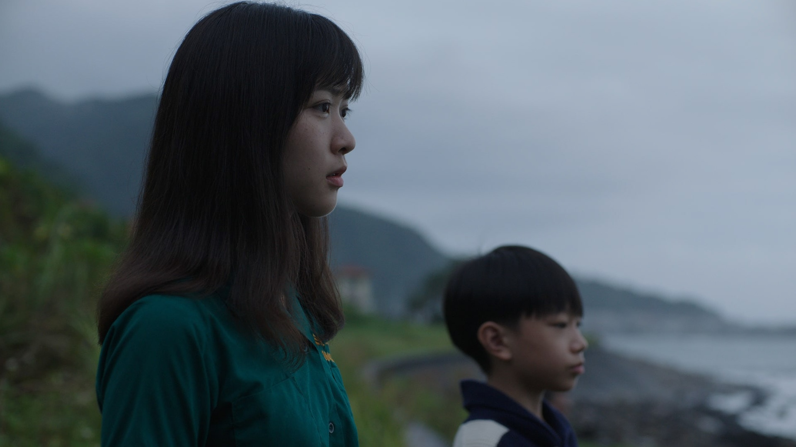
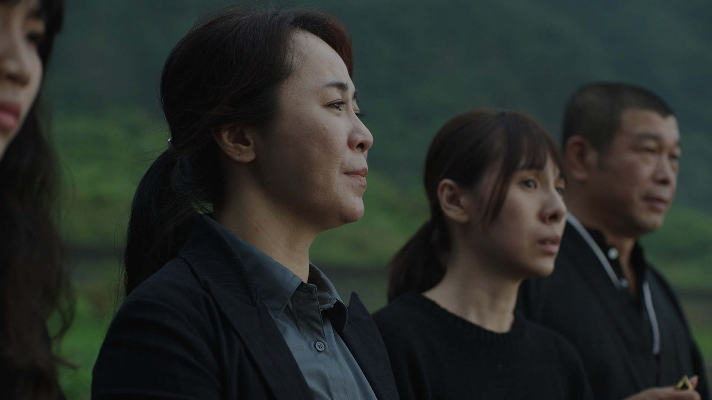

Child in Winter





dir. 張莊敬
Taiwan Public Television Service program (2022)
Aix-en-Provence International Short Film Festival (2022)





dir. 張莊敬
Taiwan Public Television Service program (2022)
Aix-en-Provence International Short Film Festival (2022)